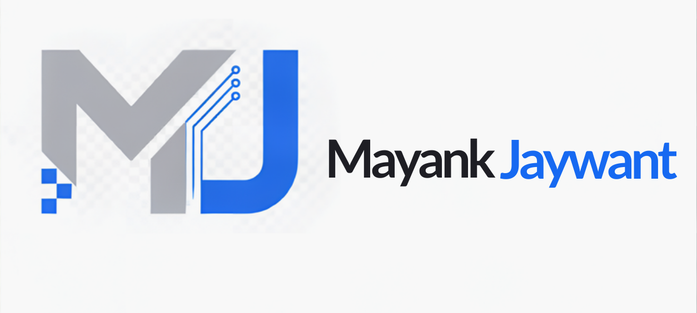

B.Sc. Computer Science Student • Aspiring Software Developer
Hi, I'm Mayank Jaywant
I am a Computer Science student building my programming skills through practical projects and continuous learning. I am exploring Python, C, Web Development, Artificial Intelligence, and Data Science.
Alongside my studies, I have professional experience in computer operations, customer support, documentation, and digital record management.
Currently Learning: Python • C • Web Development • AI
About Me
I am a B.Sc. Computer Science student and an aspiring Software Developer. I am developing my programming fundamentals in Python and C while exploring Web Development, Artificial Intelligence, and Data Science.
I enjoy building practical projects that help me understand programming concepts, improve problem-solving, and turn ideas into useful digital solutions.
I also work as a Senior Computer Operator at Rohan Indane Gas Service. My responsibilities include computer operations, customer support, digital records, documentation, and coordination of daily activities.
My goal is to become a skilled Software Developer through consistent learning, hands-on practice, and continuous improvement.
Skills & Technologies
Skills I am developing through study, practical projects, professional experience, and continuous learning.
Programming
• Python
• C
Web Development
• HTML
• CSS
• Basic Web Development
• JavaScript
AI & Technology
• AI Tools
• AI Learning
• AI for Business
Data & Digital Services
• Data Science Fundamentals
• e-Governance
Tools & Applications
• Git
• GitHub
• MS Office
Professional Skills
• Computer Operations
• Customer Support
• Problem-Solving
•
Documentation
• Digital Record Management
Communication
• Hindi
• English
My Projects
Practical projects I am building to strengthen my programming, problem-solving, and web development skills.
Student Study Manager
A Python project designed to record study activity, calculate weekly and monthly study hours, validate inputs, and display study progress.
Python • Functions • Loops • Lists • Conditions • Input Validation
Smart Learning Point
An educational platform concept focused on English practice and interactive learning experiences.
Web Development • Educational Technology • AI-assisted Learning
Mood Music Player
A Python Flask web application that helps users explore music based on different moods, with links to music platforms and available playback options.
Python • Flask • HTML • CSS • JavaScript
Professional Experience
Senior Computer Operator
Rohan Indane Gas Service • Modinagar, Uttar Pradesh
Supporting daily office operations, customer service, digital record management, and delivery coordination in a gas distribution business.
- Manage customer records, bookings, and operational data.
- Maintain digital records and office documentation.
- Assist customers with service-related questions.
- Coordinate with delivery staff for daily operations.
- Support accurate record-keeping and an organized workflow.
Computer Operator
Rohan Indane Gas Service • Modinagar, Uttar Pradesh
Gained practical experience in computer-based office work, customer support, data entry, and documentation for daily business operations.
Salesman
Hawa Hawaai Restaurant • Ghaziabad, Uttar Pradesh
Developed customer interaction, communication, and customer-handling skills while supporting restaurant sales and service.
Internship Certificates
My internship experiences and professional learning across data science, Python, and medical writing.
Virtual Data Science with Python Intern
E-Governance & Digital Services
Issued by: YuvaIntern
Issue Date: 18 October 2026
Certificate No.: YI/2026/97743/447280
Related Skills:
Python • Data Science Fundamentals • Digital Services
View Certificate →Medical Writing Assistant
Issued by: YuvaIntern
Issue Date: 17 August 2026
Certificate No.: YI/2026/97743/253074
Related Skills:
Written Communication • Documentation • Attention to Detail
View Certificate →Medical Writing Internship in Kochi
Issued by: YuvaIntern
Issue Date: 17 August 2026
Certificate No.: YI/2026/97743/253075
Related Skills:
Medical Content Writing • Research • Professional Documentation
View Certificate →Contact Me
I'm open to learning opportunities, professional networking, and project collaboration.